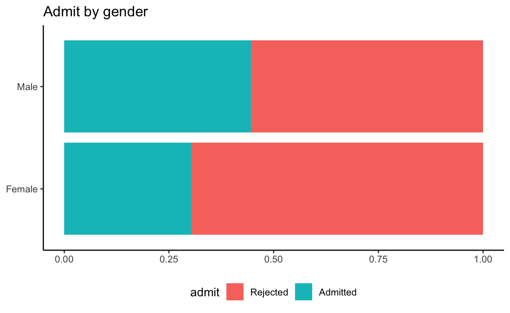
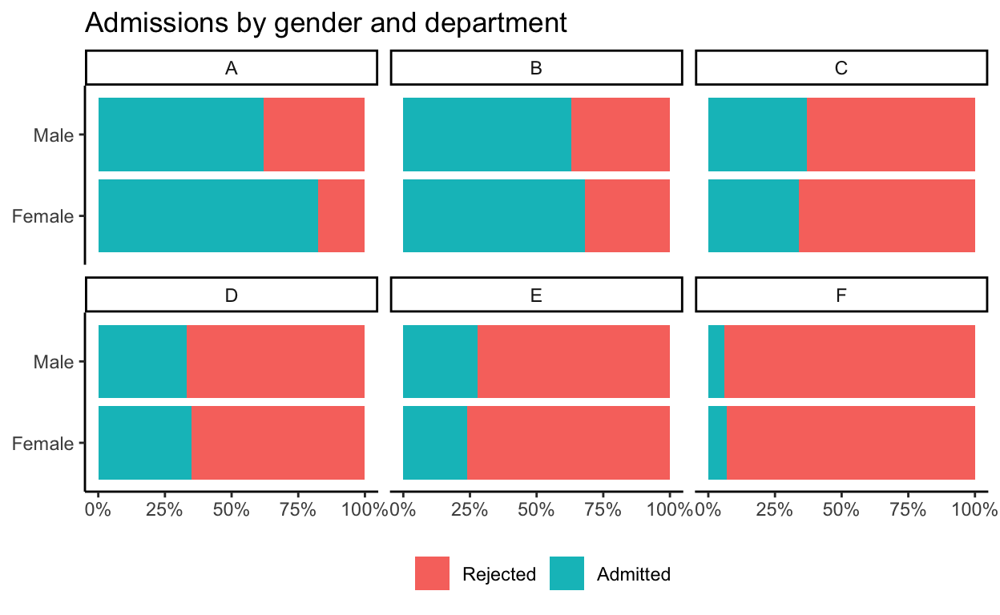
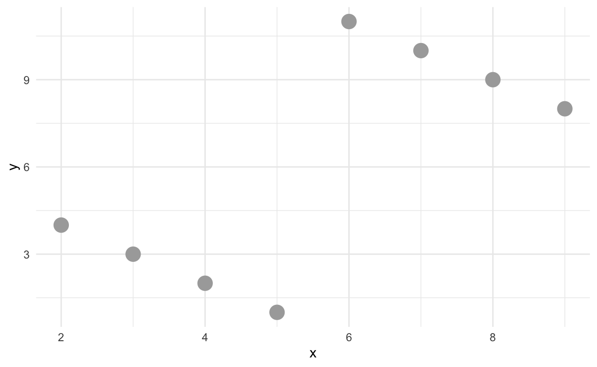
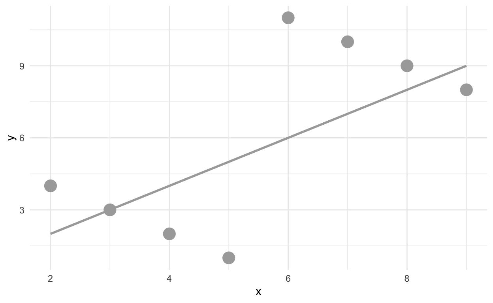
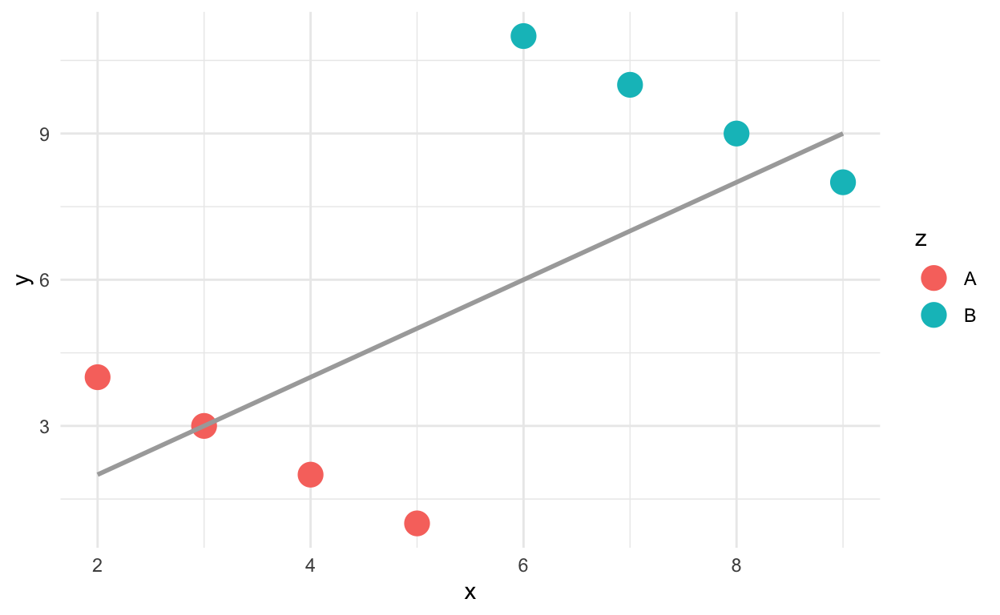
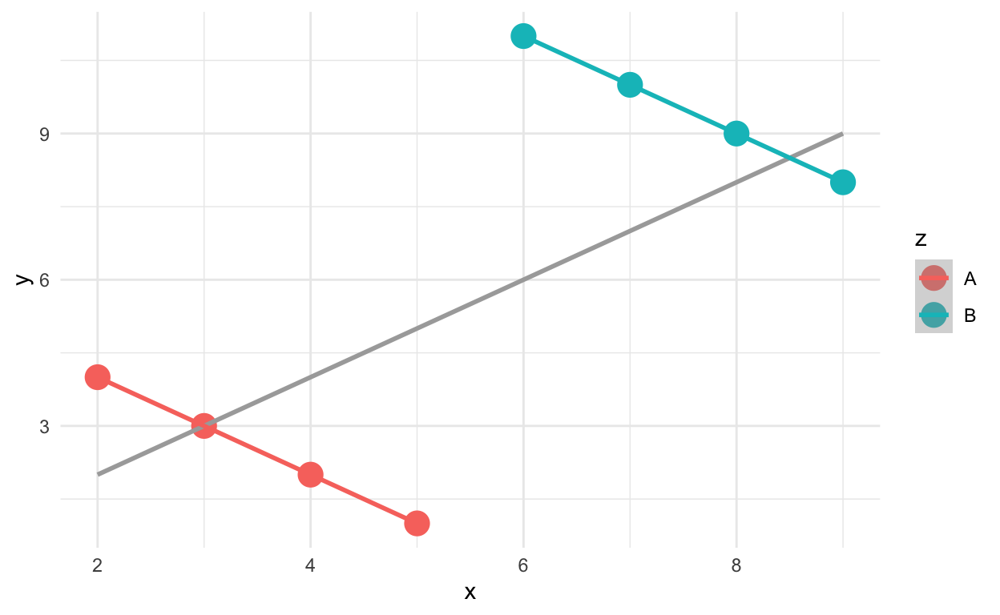

Welcome
In this tutorial, we will explore a Berkeley admission dataset and learn how to
- visualize a dataset including categorical variables
- play around with a dataset, e.g. data wrangling, tidying, acquisition
- think critically as a statistician
The tutorial is based on datasciencebox.org.
Berkeley admission data
- Study carried out by the Graduate Division of the University of California, Berkeley in the early 70’s to evaluate whether there was a gender bias in graduate admissions.
- The data come from six departments. For confidentiality we’ll call them A-F.
- We have information on whether the applicant was male or female and whether they were admitted or rejected.
head(ucbadmit, n = 5)head() lets you take a quick look at the first part of a
data-storing object. We can specify how many rows we’d like to see
through the argument n.
dim(ucbadmit)dim retrieves the dimension of an object. How many
applicants are there in the dataset? What information (features) do we
know about each individual?
Basic statistics
table(ucbadmit$admit) table(ucbadmit$dept) table(ucbadmit$gender) Question of interest
- In plain English: Is there any gender bias in the admission process, e.g. males are more likely to be admitted than females?
- Formulating with a bit statistics: Is the percentage of males admitted indeed higher than females?
- That is, to compare (1) the percentage of admitted males out of all the male applicants and (2) the percentage of admitted females out of all the female applicants.
tbl_perc <- table(ucbadmit$admit, ucbadmit$gender)
tbl_perctbl_perc <- table(ucbadmit$admit, ucbadmit$gender)
tbl_perc[2, 1] / (tbl_perc[1, 1] + tbl_perc[2, 1]) # female
tbl_perc[2, 2] / (tbl_perc[1, 2] + tbl_perc[2, 2]) # malesum(ucbadmit$admit == "Admitted" & ucbadmit$gender == "Female") / sum(ucbadmit$gender == "Female")
sum(ucbadmit$admit == "Admitted" & ucbadmit$gender == "Male") / sum(ucbadmit$gender == "Male")Let’s visualize it!
ggplot(ucbadmit, aes(y = gender, fill = admit)) + # specify the variables for the y axis and color
geom_bar(position = "fill") + # we want a barplot
labs(title = "Admit by gender", # add a plot title
y = NULL, x = NULL) + # remove axis titles
theme_classic() + theme(legend.position = "bottom") # nice aesthetics
What if we look at it by department?
ggplot(ucbadmit, aes(y = gender, fill = admit)) +
geom_bar(position = "fill") +
facet_wrap(. ~ dept) + # separate plots by department
scale_x_continuous(labels = label_percent()) + # specify x axis label
labs(title = "Admissions by gender and department",
x = NULL, y = NULL, fill = NULL) +
theme_classic() + theme(legend.position = "bottom") 
Comparison
What do you notice when comparing the department-specific barplots with the barplot of the six departments combined?
ggplot(ucbadmit, aes(y = gender, fill = admit)) +
geom_bar(position = "fill") +
labs(title = "Admit by gender",
y = NULL, x = NULL) +
theme_classic() + theme(legend.position = "bottom")Simpson’s Paradox
A motivating example

What if we try to fit the relationship between two variables on x and y axis? 
What is there is actually a third variable we were not aware of before?! 

Takeaways
- Not considering an important variable when studying a relationship can result in Simpson’s paradox
- Simpson’s paradox illustrates the effect that omission of an explanatory variable can have on the measure of association between another explanatory variable and a response variable
- The inclusion of a third variable in the analysis can change the apparent relationship between the other two variables
- Video
Questions
- What is the third variable in our analysis of the Berkeley admission data?
- Given the data (evidence) that we have, is there any gender bias in the admission process, e.g. males are more likely to be admitted than females?
- Is there any similar scenario or potential issue you could come up with in our real life?